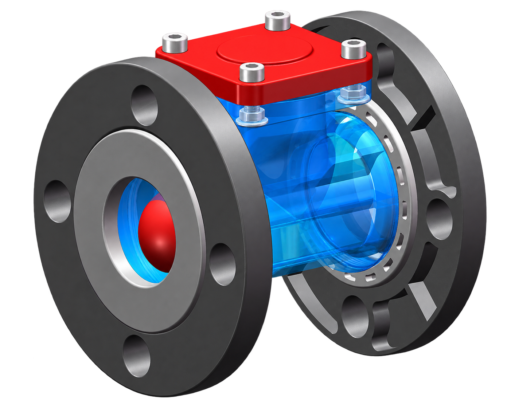
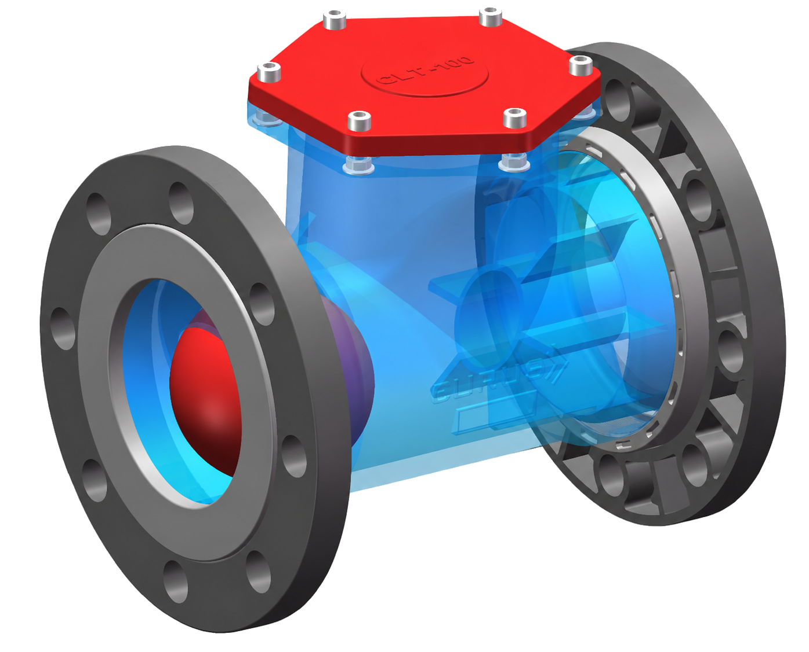

COMPACT TYPE50A
좁은 설치 공간에도
간결한 배수 구성
컴팩트한 배관 구성이 필요한 공조·배기 설비에 적용하기 좋은 크기입니다.
- 50A 연결 배관 대응
- 수직·수평 배관 구성 검토 가능
- 점검 커버를 통한 내부 관리
HVAC / CATEGORY 03
공조 시스템의 운전 안정성과 효율을 높이는 부품 및 제어 제품군입니다.
09 / CLEANABLE LEAK-PROOF TRAP
음압 환경에서 응축수는 원활하게 배출하고, 불필요한 공기 역류는 억제하도록 설계한 세척·점검형 배수 트랩입니다.
산·알칼리·유기 배기 계통의 응축수 배수에 대응하며, 배관 조건과 요구 배수량에 맞춰 50A와 100A 두 가지 크기로 구성할 수 있습니다.
적용 조건 상담 ↗

SIZE CONFIGURATION
형상 차이를 직관적으로 확인할 수 있도록 50A와 100A를 구분했습니다. 최종 선정은 연결 배관, 배수량과 설비 운전 조건을 함께 검토해 결정합니다.
컴팩트한 배관 구성이 필요한 공조·배기 설비에 적용하기 좋은 크기입니다.
배관 구경과 배수 요구가 큰 현장을 고려한 확장형 구조입니다.
Selection note제품 크기는 단순한 외형 차이가 아니라 현장의 배관 구경, 응축수 발생량, 압력 조건을 기준으로 선정합니다.
ENGINEERED DRAINAGE
볼의 움직임을 이용해 평상시에는 공기 유입을 억제하고, 배수가 필요할 때는 유로를 빠르게 확보합니다.
Ball Valve 방식으로 음압 덕트의 밀폐 성능과 안정적인 개폐를 함께 고려했습니다.
고정되지 않은 Ball이 배수 조건에 반응해 낮은 음압에서도 신속한 밀폐와 배수를 지원합니다.
상부 점검 커버를 통해 슬러지와 이물질을 확인하고 내부를 관리할 수 있습니다.
견고한 플랜지 결합 구조로 배관 연결부의 안정성과 장기 유지관리를 고려했습니다.
INSTALLATION LOGIC
드레인 포트의 위치와 배관 동선을 고려해 수직 또는 수평 배수 구성을 검토할 수 있습니다. 소화수처럼 순간적인 배수가 발생하는 상황에서는 Ball의 부력으로 배수 공간을 확보하도록 고안했습니다.
장비 하부 공간과 드레인 포트 위치를 고려한 연결
현장 배관 동선과 점검 접근성을 고려한 연결